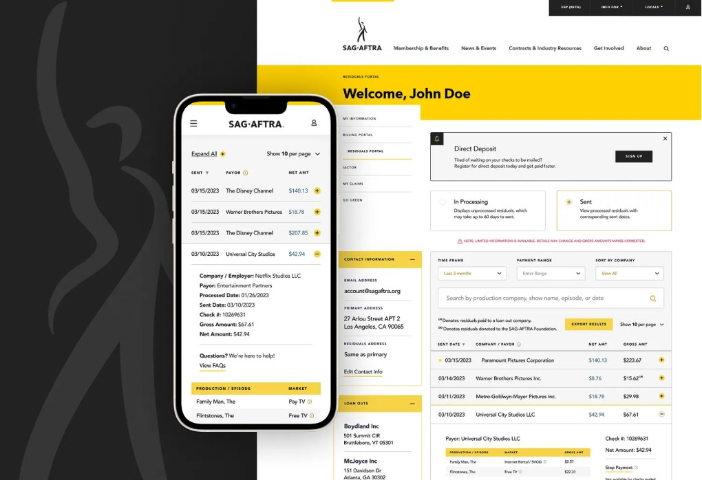
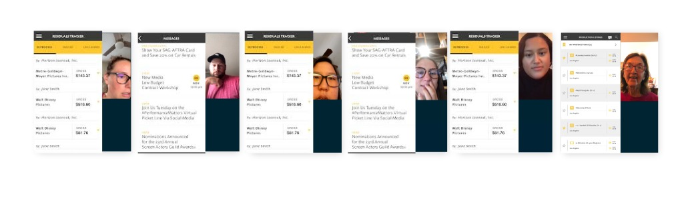
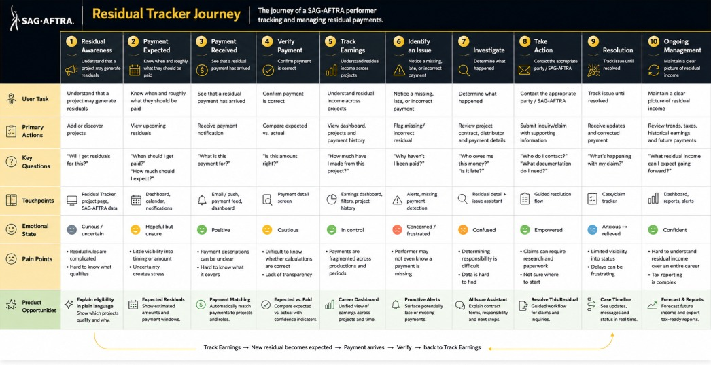
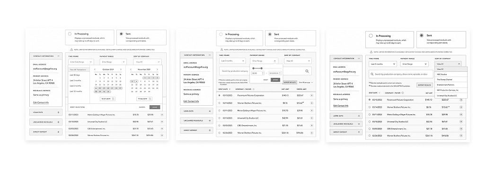
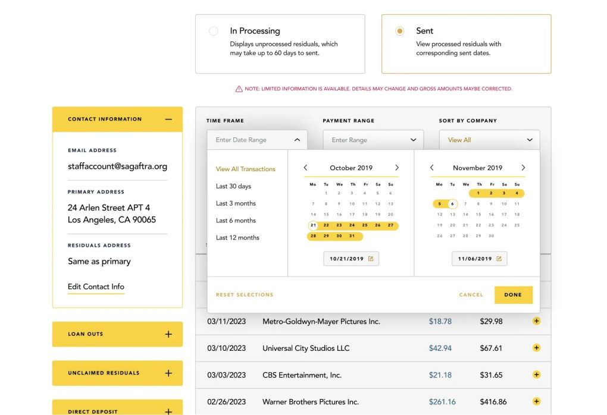
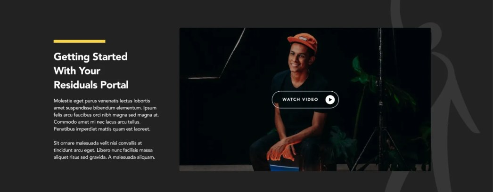

SAG-AFTRA · Member experience
Where is
my money?
Residuals are how actors get paid. Understanding where a payment sat in the process was needlessly opaque — so we made the union’s internal workflow visible to its members.

01 · Research
Start with the people actually waiting for the money.
Structured interviews with thirty SAG-AFTRA members — not to test whether they could click through, but to learn how they think about residuals.

02 · Designing for transparency
Show the process, not just the result.
Members were seeing Paid or Not paid. The journey in between was invisible — and that gap is where the anxiety lived.

03 · Hierarchy
Not every piece of information is equally important.
Rebuilt around the five questions a member actually arrives with: how much, what for, where is it, do I need to act, what happens next.



Impact
We weren’t simply reducing clicks. We were reducing uncertainty.

Next project
CompTIA —
an editorial answer to a technical category.